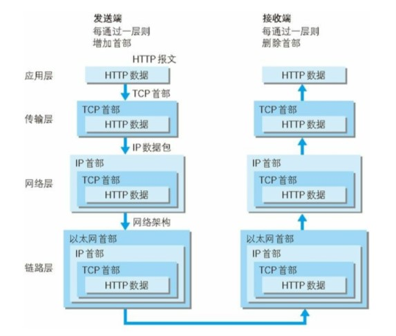
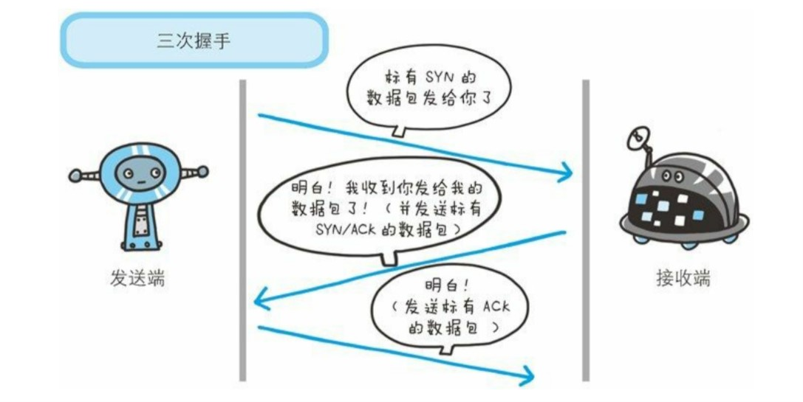
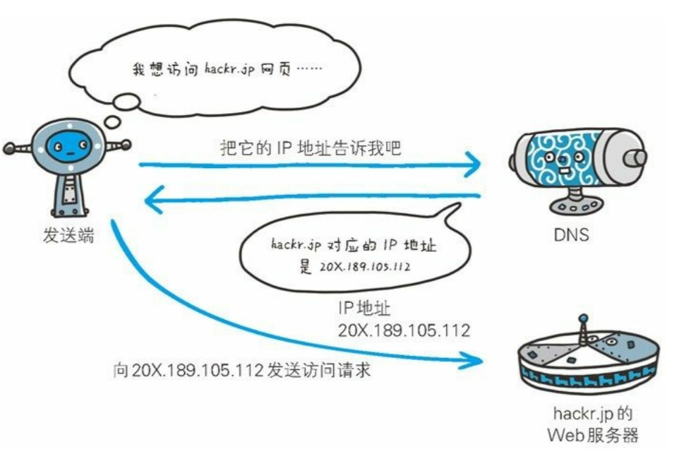
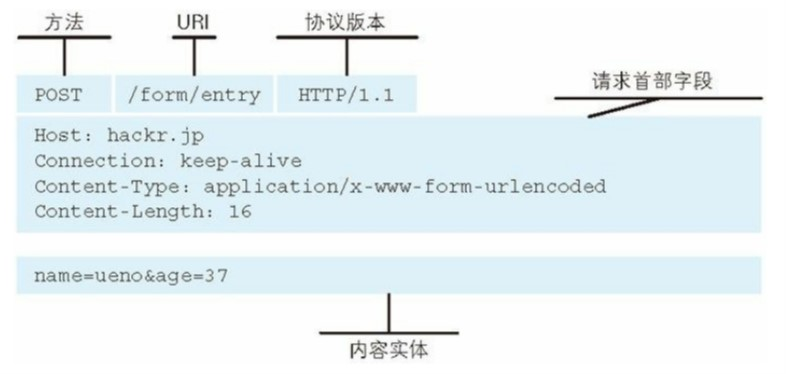
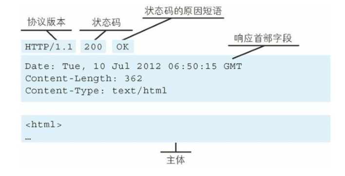
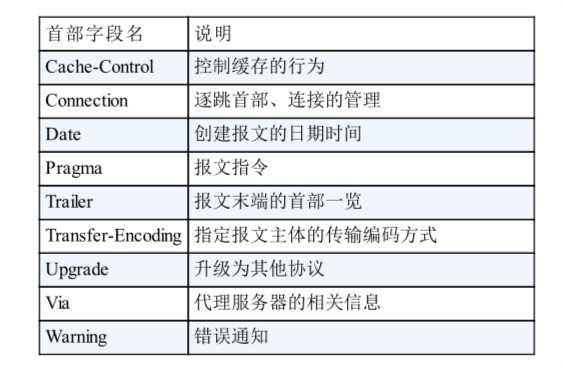
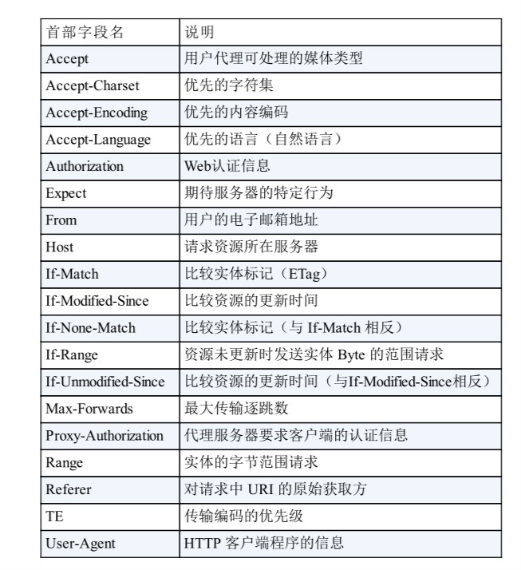
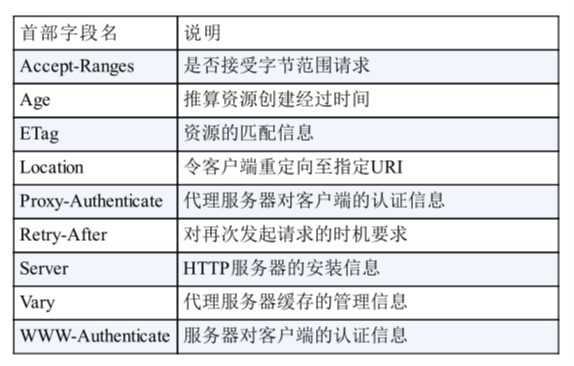
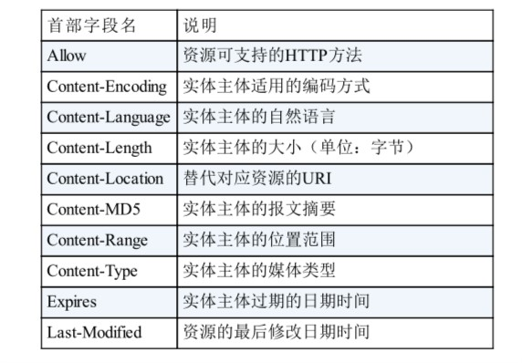
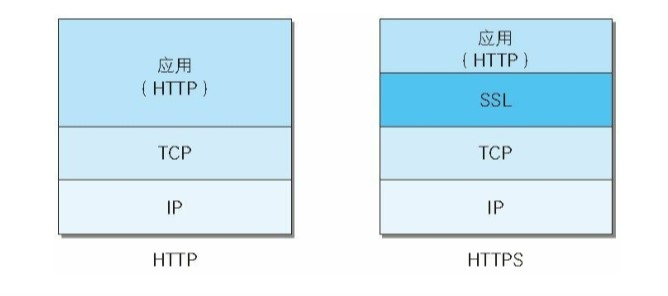

《图解HTTP》读书笔记
一、Web及网络基础
1.1 HTTP的诞生
3项WWW的构建技术：
HTML(HyperText Markup Language，超文本标记语言) 作为页面的文本标记语言
HTTP(HyperText Transfer Protocol，超文本传输协议) 作为文档传递的协议
URL(Uniform Resource Locator，统一资源定位符) 作为文档所在地的地址
1.2 网络基础协议 TCP/IP
计算机与网络设备要相互通信，双方就必须基于相同的方法。
1.2.1 TCP/IP的分层管理
TCP/IP 协议族按层次分别分为以下 4 层：应用层、传输层、网络层和数据链路层。
好处：每层做着自己的事情，不需要弄清楚上下层是如何运转的（封装），某层需要改变也可以单独修改，只要按照各层之间的接口封装即可
- 应用层：决定了向用户提供应用服务时通信的活动。FTP（File Transfer Protocol，文件传输协议）和 DNS（Domain Name System，域名系统）服务就是其中两类。HTTP也是应用层的。
- 传输层：传输层对上层应用层，提供处于网络连接中的两台计算机之间的数据传输。有两个性质不同的协议：TCP 和 UDP。
- 网络层：用来处理在网络上流动的数据包。
- 链路层：用来处理连接网络的硬件部分。
发送端在层与层之间传输数据时，每经过一层时必定会被打上一个该层所属的首部信息。反之，接收端在层与层传输数据时，每经过一层时会把对应的首部消去。这叫做封装。

1.3 与HTTP关系密切的协议：IP、TCP、DNS
1.3.1 负责传输的IP协议
IP协议处于网络层，作用是把各种数据包传送给对方。需要确定IP地址和MAC地址。
IP地址指明了节点被分配到的地址，MAC地址指网卡的固定地址。IP地址可以和MAC地址配对。
ARP协议：凭借MAC地址进行通信 IP通信依赖MAC地址，网络上，通信的双方要经过多台计算机和网络设备中转才能连接到对方。在中转时，会利用下一站中转设备的MAC地址来搜索下一个目标。这时，就用到了ARP协议——根据通信双方的IP地址就可以反查出对应的MAC地址。
中转过程中，计算机和路由器等网络设备只能获取很粗略的传输路线，称为路由选择。
1.3.2 确保可靠性的TCP协议
TCP处于传输层，提供可靠的字节流服务。
字节流服务：为了方便传输，将大块数据分割成以报文段为单位的数据包进行管理。
TCP协议为了更容易传送大数据才把数据分割，而且TCP协议能够确认数据最终是否送达对方。
确保数据能到达目标 TCP采用三次握手策略。TCP协议把数据送出去后，不会对传送后的情况置之不理，一定会向对方确认是否成功送达。握手过程中使用了TCP的标志：SYN和ACK。
发送端首先发送一个带 SYN 标志的数据包给对方。接收端收到后,回传一个带有 SYN/ACK 标志的数据包以示传达确认信息。最后,发送 端再回传一个带 ACK 标志的数据包,代表“握手”结束。 这就是有名的三次握手。

1.3.3 负责域名解析的DNS协议
DNS（Domain Name System）服务是和 HTTP 协议一样位于应用层的协议。它提供域名到 IP 地址之间的解析服务。

二、简单的HTTP协议
通信模式：基于请求和响应模式，没有请求则没有响应，通信过程中不保存状态信息(无状态协议)，也就是不对请求和响应之间的通信状态进行保存
报文类型
请求报文
格式(请求行 请求头部字段\r\n请求实体内容)

响应报文
格式(响应行 响应行头部字段\r\n响应实体内容)

HTTP方法
GET：用于获取资源 POST：用于传输主体的实体 PUT：用于传输文件(一般网站不开发该功能) HEAD：与GET类似，但是不返回报文主体内容，主要用于确认URI有效性以及资源的更新日期 DELETE：用于删除文件，与PUT相反(一般不开放) OPTIONS：用于查询指定URI资源支持的方法 TRACE：跟踪路径(不怎么使用) CONNECT：要求使用隧道协议连接代理，主要是SSL(Secure Sockets Layer，安全套接字)和TLS(Transport Layer Security，传输层安全)将通信的内容加密
长连接和短连接
短连接：在HTTP初期版本中，每次完成一个HTTP传输，就需要建立一次TCP连接，会造成很多不必要的开销，使得网络性能降低 长连接：只要通信的一端没有明确提出断开连接，则保持TCP连接(keep-alive)，建立一个TCP连接可以进行多次的HTT通信，减少了TCP的建立以及断开所造成的额外开销，减轻负担
管线化 在长连接的基础上，使得请求管线化成为可能，在这之前，每一次请求都需要等到前一次请求的响应回来之后才能发出，而采用管线化之后，则可以不用等到响应再发出新的请求 Cookie技术 在请求和响应报文中，加入Cookie信息，用于保存状态信息，从而使得无状态协议HTTP协议可以保存状态
三、HTTP状态码
- 作用：用于告知客户端服务端处理的结果
- 格式：3位数字 + 状态码说明
- 类别
- 1XX：信息性状态码，表示请求正在处理
- 2XX：成功状态码，表示请求正常处理完毕
- 3XX：重定向状态码，需要进行附加操作以完成请求
- 4XX：客户端错误状态码，服务器无法处理请求
- 5XX：服务器错误状态码，服务器处理请求错误
常用状态码
- 2XX系列，表示成功
- 200 OK，表示请求被正常处理
- 204 No Content， 表示请求被正常出来，但是返回的响应报文中不包含实体的主体部分
- 206 Partial Content，表示客户端进行范围请求，而服务端成功执行了这部分的请求，响应报文由Content-Range指定实体内容
- 3XX系列，重定向，表示浏览器需要执行某些特殊的处理以正确处理请求
- 301 Moved Permanently，永久性重定向，表示请求的资源已经分配了新的URI，以后应该使用新的URI
- 302 Found，临时性重定向，表示请求的资源已经分配新的URI，希望用户本次能使用新的URI访问
- 303 See Other，表示请求的资源存在另外一个URI，应使用GET方法定向获取资源
- 304 Not Modified，请求的附带条件的资源找到，但是未满足请求的条件(与重定向无关)
- 307 Temporary Redirect，临时性重定向，与302类似
- 4XX系列，客户端错误，表明客户端是发生错误的原因所在
- 400 Bad Request，请求报文中存在语法错误
- 401 Unauthorized，表示请求需要认证
- 403 Forbidden，表示请求的资源被服务器拒绝
- 404 Not Found，无法找到请求的资源
- 5XX系列，服务器错误，表示服务器本身发生错误
- 500 Internal Server Error，服务器执行请求时发生了错误或临时性故障
503 Service Unavailable，服务器暂时处于超载状态或正在进行停机维护，现在无法处理请求
四、与HTTP协作的Web服务器
数据转发：代理、网关、隧道
HTTP通信时，除客户端和服务器外，还有一些用于通信数据转发的程序，它们可以配合服务器工作。 这些程序和服务器可以将请求转发给通信线路上的下一站服务器，并且能接收从那台服务器发送的响应再转发给客户端。
代理
代理是一种有转发功能的程序，扮演了位于服务器和客户端『中间人』的角色，接收由客户端发送的请求转发给服务器，同时也接收服务器返回的响应转发给客户端。
网关
网关是转发其他服务器通信数据的服务器，接收从客户端发送来的请求时，就像自己拥有资源的服务器一样对请求进行处理。 网关与代理类似，网关能使通信线路上的服务器提供非HTTP协议服务。
隧道
在相隔甚远的客户端和服务端之间进行中转，并保持双方通信连接的应用程序。 建立起一条与其他服务器的通信线路，届时使用SSL等加密手段进行通信。隧道的目的是确保客户端与服务器进行安全的通信。
五、HTTP首部字段
- 作用：在客户端与服务器通信过程中传递额外信息
- 格式：首部字段名: 字段值1, 字段值2, …
类型
通用首部字段(请求和响应报文都会使用的字段) 
请求首部字段(补充了请求的附加信息)

- 响应首部字段(补充了响应的附加信息)

- 实体首部字段(补充与实体内容有关的信息)

六、确保安全的HTTPS
HTTP缺点(未加密协议)
- 使用明文通信，内容可能会被窃听
- 不验证通信方的身份，有可能会遭遇伪装
- 无法验证报文的完整性，有可能内容遭修改
加密策略
- 通信加密，通过和SSL或TLS组合使用，建立安全的通信通道，加密HTTP通信内容
- 内容加密，将参与通信的内容本身加密
HTTPS = HTTP + 加密 + 认证 + 完整性保护
HTTPS 并非是应用层的一种新协议。只是 HTTP 通信接口部分用SSL（Secure Socket Layer）和 TLS（Transport Layer Security）协议代替而已
